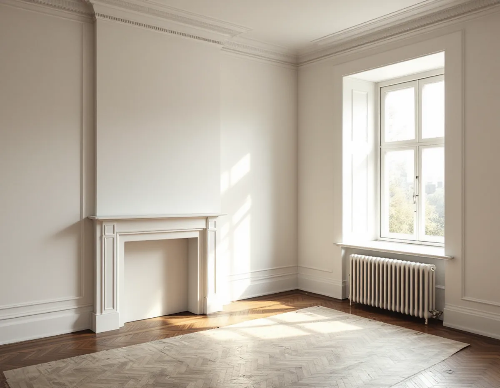
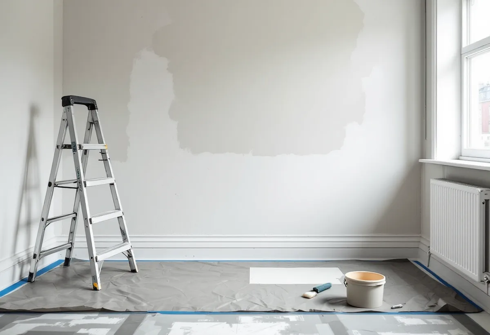

Platsbesök
Vi tittar på tak, väggar, snickerier och fönster och provar hur den gamla färgen sitter.
Hägersten rymmer både jugendkvarter med små bostadsrätter och villor vid Mälaren. I Midsommarkransen finns över 4 000 bostadsrätter, medan nästan alla småhus i Mälarhöjden är äganderätter. Geal Entreprenad AB målar lägenheter, villor och radhus i Mälarhöjden, Midsommarkransen, Hägerstensåsen, Västertorp och Fruängen, med gratis platsbesök och skriftligt kostnadsförslag.

Stadsmuseets skrift om Midsommarkransen berättar att Nyborgs AB köpte tegelbruket och marken runtomkring 1907 och att utbyggnaden kunde börja 1910. Gedigna stenhus i enkel jugendstil uppfördes, två våningar höga i stadslika kvarter, med fullt utbyggda vindar och förhöjda källare för butiker. Lägenheterna var i regel små och enkelt utrustade. Förstaden hette först Tellusborg och fick namnet Midsommarkransen 1926.
Enligt stadens områdesfakta för 2025 fanns 4 371 bostadsrätter i stadsdelen. Hägerstensåsen, där de första smalhusen stod klara 1939 och de sista 1948, hade 2 034. Stadsmuseet skriver att andelen privata fastighetsägare på åsen var mycket hög och att andelen smålägenheter var mycket stor. Fruängen byggdes i huvudsak under senare delen av 1950-talet som en av de tunnelbanestäder som staden lät uppföra för att lösa efterkrigstidens bostadsbrist. I de flesta av de här husen är det lägenheten som målas, inte fasaden.
Bostadsrättslagen säger i 7 kap. 12 § att bostadsrättshavaren på egen bekostnad ska hålla lägenheten i gott skick, om inte annat bestämts i stadgarna. Väggar, tak och snickerier inne i lägenheten är därför normalt ditt ansvar, men läs föreningens stadgar, eftersom de kan fördela ansvaret annorlunda.

I en lägenhet från 1910- eller 1940-talet kan taken ha limfärg och väggarna flera lager tapet och färg. Riksantikvarieämbetet skriver att limfärg som takfärg var vanlig ända fram till 1950-talet, och att den i dag främst används vid ommålning av ytor som tidigare har målats med limfärg. Vilken färg som passar beror alltså på vad som redan sitter i taket.
Därför provar vi underlaget innan något beställs: kritar taket, har väggen tapet under färgen och var behövs spackling? Handboken påpekar att man vid ommålning av äldre ytor som inte varit spacklade tidigare inte bör införa spackling, så hur slät ytan ska bli bestämmer vi tillsammans med dig.
Ska fönster eller ytterdörr målas i en bostadsrätt ger bara insidan rotavdrag. Vem som ansvarar för utsidan står i föreningens stadgar.
Mälarhöjden har en helt annan bebyggelse. Stadsmuseets skrift beskriver promenaden längs Mälarstranden mellan Klubbensborg och Lyran med stora utsirade trävillor från 1800-talets andra hälft, strama vita funkishus från 1930-talet vid Pettersbergsvägen och senare kataloghus. Från 1913, när Fridhems villastad fick spårvagn till staden, blev det vanligare att bo här året runt, och området planlades 1923.
Enligt områdesfakta för 2025 fanns 1 086 bostäder i småhus i Mälarhöjden, varav 988 äganderätter. Stadens vägledning för småhusområden räknar Mälarhöjden som villastad och som kulturhistoriskt värdefull miljö. För en ny kulör på villan är det därför klokt att börja med Stadsmuseets klassificeringskarta.
En utsirad trävilla från 1800-talet har mycket snickerier som skrapas och målas för hand, medan ett vitt funkishus kräver att putsen och den gamla färgen fungerar ihop. Mer om husen och taken i stadsdelen finns under takläggare i Hägersten.
Stockholms stad skriver att det inte längre krävs bygglov för fasadändringar på en- och tvåbostadshus om vissa förutsättningar är uppfyllda, men att utökad lovplikt gäller i särskilt kulturhistoriskt värdefulla byggnader och områden. För flerbostadshus gäller en annan regel: en ändring på fasad eller tak som vetter mot allmän plats kräver bygglov.
Vill en bostadsrättsförening i Midsommarkransen byta kulör på gatufasaden behöver den alltså söka lov. Boverket anger att ommålning i samma kulör normalt räknas som underhåll. Läs mer om målning ute och inne på sidan om målare.
Vi tittar på tak, väggar, snickerier och fönster och provar hur den gamla färgen sitter.
I bostadsrätt går vi igenom vad stadgarna säger, för villor Stadsmuseets karta.
Rum, ytor, färgtyp, spackling och antal strykningar skrivs ut.
Golv, trapphus, möbler och rum som inte berörs täcks innan något damm uppstår.
Spackling, slipning och strykningar i rätt ordning, med torktid mellan varje steg.
Vi går igenom rummen tillsammans och bättrar där det behövs.
I en bostadsrätt räknar Skatteverket målning av golv, tak, väggar och element som rotarbete, liksom målning av innerdörrar och insidan av ytterdörrar och fönster. Att måla fasader eller balkonger ger inget avdrag. I en villa ingår även fasadmålning.
Avdraget är 30 procent av arbetskostnaden, högst 50 000 kr per person och år och högst 75 000 kr tillsammans med rutavdrag. Material och resor ger inget avdrag. Geal drar avdraget direkt på fakturan.
I en lägenhet styr antalet rum, takhöjden och hur mycket spackling väggarna behöver, och om taken har limfärg som måste tas bort. För en villa avgör mängden snickerier och hur fasaden är klädd. Platsbesöket är gratis och du får ett skriftligt kostnadsförslag.
Fasad, fönster och invändig målning.
Målare i Stockholm →Takbyte, takbesiktning och plåtarbeten.
Takläggare i Hägersten →Kuperad tomt, stödmur och dränering.
Byggföretag i Hägersten →Trävillor, färglager och skonsam färgborttagning.
Fasadmålning i Hägersten →Småstugor, typritningar och panel.
Fasadrenovering i Hägersten →Golv i källare och suterrängvåning.
Golvläggare i Hägersten →Efterkrigstidens lägenheter och asbestprov.
Köksrenovering i Hägersten →Låglutande tak och takavvattning i Hägersten.
Plåtslagare i Hägersten →Verandor, dörrar och snickeridetaljer på villan.
Snickare i Hägersten →